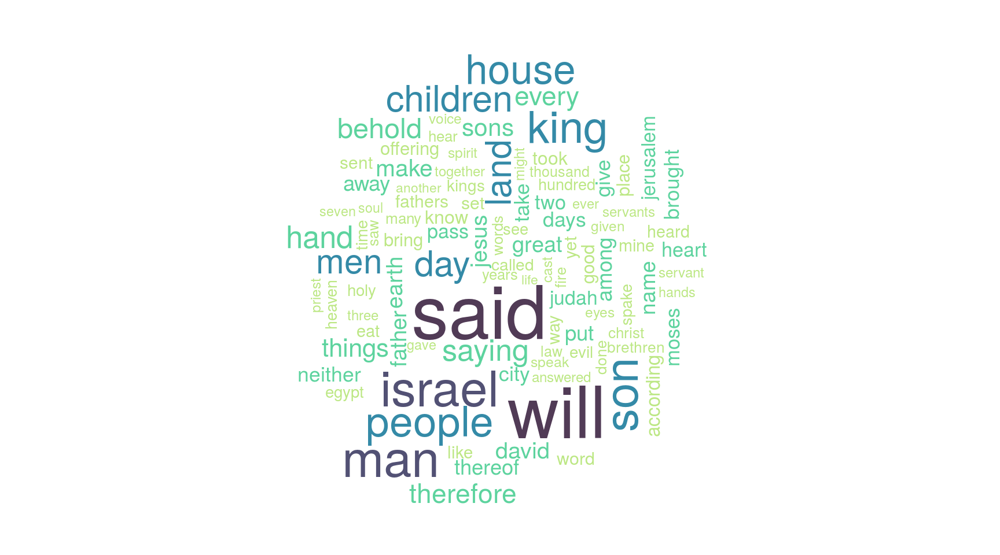
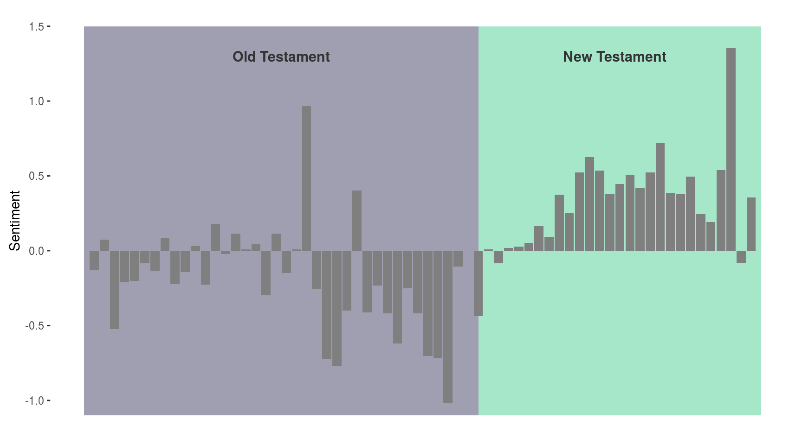

bibler
Preamble
The Bible in R.
Bibler includes 6 neat datasets about the King James Bible and the Apocrypha.
Overview
Bible
king_james_dfThe King James Bible as data.frameking_james_tmThe King James Bible as tm corpus (c("VCorpus", "Corpus")king_james_booksList of books that constitute the King James Bible
Apocrypha
apocrypha_dfThe Apocrypha as data.frameapocrypha_tmThe Apocrypha as tm corpus (c("VCorpus", "Corpus")apocrypha_booksList of books that constitute the Apocrypha
Utils
middle_english_stopwordsCharacter vector of Middle English stopwordsmiddle_english_positiveLexicon of positive Middle English termsmiddle_english_negativeLexicon of negative Middle English terms
Datasets
Both the data.frame and Corpus (tm) datasets include the following variables:
Book.AbbreviationKing.James.Bible- book title as in King James BibleVulgate- book title as in VulgateDouay.Rheims- book title in Douay Reihms versionFull.Title.Auth.V- book title in authorized versionTestament- Testament in which book/verse can be found.Book.Number- Order of appearance of books, starting with Genesis #1VerseText- content of verse
In the corpus datasets (ending in _tm) each verse makes a document while in the data.frame each row is a verse.
library(tm)
length(king_james_tm) == nrow(king_james_df)data.frame
The data frames consist of one verse by row, meta-data are variables/columns.
names(king_james_df) # see ?king_james_df> [1] "Book.Abbreviation" "King.James.Bible" "Vulgate"
> [4] "Douay.Rheims" "Full.Title.Auth.V" "Testament"
> [7] "Book.Number" "Verse" "Text"Corpus
The tm corpus is comprised of 31102 documents, one for each verse and include meta-data (identical to columns in _df dataset).
meta(king_james_tm[[1]]) # meta of first verse> id : 1
> origin : http://www.sacred-texts.com/bib/osrc/
> Verse : Gen|1|1|
> King.James.Bible : Genesis
> Vulgate : Genesis
> Douay.Reihms : Genesis
> Full.Title.Auth.V: The First Book of Moses, called Genesis
> Testament : Old Testament
> Book.Number : 1Books
Reference list of the books included in datasets.
| Book.Abbreviation | King.James.Bible | Vulgate | Douay.Rheims | Full.Title.Auth.V | Testament | Book.Number |
|---|---|---|---|---|---|---|
| Gen | Genesis | Genesis | Genesis | The First Book of Moses, called Genesis | Old Testament | 1 |
| Exo | Exodus | Exodus | Exodus | The Second Book of Moses, called Exodus | Old Testament | 2 |
| Lev | Leviticus | Leviticus | Leviticus | The Third Book of Moses, called Leviticus | Old Testament | 3 |
| Num | Numbers | Numeri | Numbers | The Fourth Book of Moses, called Numbers | Old Testament | 4 |
| Deu | Deuteronomy | Deuteronomium | Deuteronomy | The Fifth Book of Moses, called Deuteronomy | Old Testament | 5 |
Examples
Term Frequency
We can have a look at the most mentioned terms in the Bible. Here I use the king_james_tm dataset which is a corpus of documents from the tm package.
bibler also comes with a set of 97 Middle English stopwords.
library(wordcloud)
library(tm)
data("king_james_tm")
data("middle_english_stopwords") # get middle english stopwords
# clean text
wc <- tm_map(king_james_tm, tolower) # to lower case
wc <- tm_map(wc, stripWhitespace)
wc <- tm_map(wc, removeNumbers) # remove
wc <- tm_map(wc, removePunctuation) # remove punctuation
wc <- tm_map(wc, removeWords, c(stopwords("english"), middle_english_stopwords,
"lord", "god")) # remove stopwords
wc <- tm_map(wc, PlainTextDocument)
# count term frequency
tdm <- TermDocumentMatrix(wc, control = list(minWordLength = 2))
tdm <- removeSparseTerms(tdm, 0.99)
tdm <- as.matrix(tdm)
tdm <- sort(rowSums(tdm), decreasing = TRUE)
dat <- data.frame(word = names(tdm), freq = tdm)
# wordcloud
wordcloud(words = dat$word, scale = c(4, .3), freq = dat$freq, max.words = 100,
rot.per = 0.25,
colors = c("#bce784", "#5dd39e", "#348aa7", "#525174", "#513b56"))
Sentiment Analysis
First we can download the well-known Bing Liu lists of positive and negative terms.
- Download Hu and Liu Lexicons
# base Bing Liu lexicons
neg <- readLines("negative-words.txt")
neg <- neg[36:length(neg)]
pos <- readLines("positive-words.txt")
pos <- pos[36:length(pos)]However those lexicons are based on Internet reviews and other modernities and therefore are not well suited to the King James Bible. To remedy to this bibler also comes with lexicons of positive and negative Middle English terms.
- 48 Positive terms
- 42 Negative terms
We can now assess the sentiment of each verse and plot the average sentiment by book in order of appearance in the Bible.
data("king_james_df")
data("middle_english_negative")
data("middle_english_positive")
pos <- c(pos, middle_english_positive)
neg <- c(neg, middle_english_negative)
# sentiment scoring FUN
sentiment_score = function(text, pos.words, neg.words){
scores = plyr::laply(text,
function(text, pos.words, neg.words){
text = gsub("[[:punct:]]", "", text)
text = gsub("[[:cntrl:]]", "", text)
text = gsub('\\d+', '', text)
text = sapply(text, tolower)
word_list = stringr::str_split(text, "\\s+")
words = unlist(word_list)
positive_matches = match(words, pos.words)
negative_matches = match(words, neg.words)
positive_matches = !is.na(positive_matches)
negative_matches = !is.na(negative_matches)
score = sum(positive_matches) - sum(negative_matches)
return(score)
}, pos.words, neg.words)
return(scores)
}
# score each verse
king_james_df$Sentiment <- sentiment_score(king_james_df$Text, pos, neg)
# mean sentiment / book
bks <- plyr::ddply(king_james_df, c("King.James.Bible", "Book.Number"),
plyr::summarise, Sentiment = mean(Sentiment))
bks$colour <- ifelse(bks$Sentiment >= 0, "#5dd39e", "#525174")
bks$label <- ifelse(bks$Sentiment >= 0, "positive", "negative")
plot_ly(bks,
x = ~Book.Number,
y = ~Sentiment,
type = "bar",
text = ~King.James.Bible,
hoverinfo = "text",
marker = list(
color = ~colour
)) %>%
layout(title = "Average sentiment by book",
showlegend = FALSE,
xaxis = list(title = "Book Number"),
width = 800,
height = 415)There is indeed more negativity at the “beginning” of the Bible: the Old Testament is far more gruesome than the New Testament.
The Song of Solomon (book #22) is a lapse of light amidst the dark and spine-chilling godly injunctions of the Old Testament, it is scripturally unique in its celebration of sexual love.
John 3 in the New Testament is also positive, by the Bible standard anyway: John accepts Jesus as the Messiah, gets baptised, finds the path to God, etc. Good stuff.
The most negative book according to the analysis is Zephaniah (book #36) which is not inaccurate, the message of the book is best summed by this terse and unambiguous passage:
“You also, O Ethiopians, / Shall be killed by my sword.”
Zephaniah comes towards the end of the Old Testament and those who have not accepted the truth by then must be slain.
library(ggplot2)
rect <- data.frame(xmin = c(0, 39), xmax = c(39, 67), ymin = c(-1.1, -1.1),
ymax = c(1.5, 1.5),
label = c("Old Testament", "New Testament"),
fill = c("#bce784", "#525174"))
ggplot(data = bks, aes(x = Book.Number, y = Sentiment)) +
geom_rect(data = rect,
aes(xmin = xmin, xmax = xmax, ymin = ymin, ymax = ymax,
fill = fill, alpha = 0.5),
inherit.aes = FALSE,
position = "identity") +
geom_text(data = rect, aes(x = c(39/2, (39+(27/2))), y = ymax - 0.2,
label = label),
color = "grey20", fontface = "bold", size = 4) +
geom_bar(stat = "identity", fill = "grey50") +
scale_fill_manual(values = c("#5dd39e", "#525174")) +
theme(legend.position = "none",
panel.border = element_blank(),
panel.background = element_blank(),
axis.text.x = element_blank(),
axis.ticks.x = element_blank(),
axis.title.x = element_blank())
Average sentiment:
- Old Testament: -0.156
- New Testament: 0.137
Testaments
Since there are textual differences between Testaments we’ll categorise the verses according to each and plot a comparison cloud.
# split
old <- paste0(king_james_df[king_james_df$Testament == "Old Testament", "Text"],
collapse = "")
new <- paste0(king_james_df[king_james_df$Testament == "New Testament", "Text"],
collapse = "")
corp <- Corpus(VectorSource(c(old, new))) # combine
corp <- tm_map(corp, removePunctuation)
corp <- tm_map(corp, content_transformer(tolower))
corp <- tm_map(corp, removeNumbers)
corp <- tm_map(corp, removeWords, c(middle_english_stopwords,
stopwords("english")))
term.matrix <- TermDocumentMatrix(corp)
term.matrix <- as.matrix(term.matrix)
colnames(term.matrix) <- c("Old Testament", "New Testament")
comparison.cloud(term.matrix, max.words = 200, random.order = FALSE,
rot.per = 0.25, colors = rev(c("#5dd39e", "#525174")), title.size = 1,
scale = c(3, .5))
The New Testament is mostly about Jesus Christ and the band of disciples roaming the lands laying hands. While the Old Testament is more about God appearing to illiterate desert people ruling that thee and thy shall obey.
Mary
Christopher Hitchens once said that Mary only appeared three times in the bibe. I cannot tell exactly what he meant by “appeared” (only God knows now) but we can tell that she is mentioned far more often - 46 times.
length(king_james_df$Text[grep("Mary[[:space:]]|Mary[[:punct:]]", king_james_df$Text)]) # nbr mentions